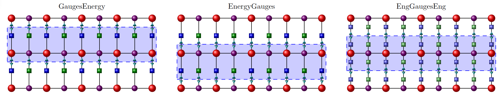

Contracting PEPS tensor network
Once we construct the tensor network, we can proceed with its contraction. The first step involves preparing structures to store information about the approximate contraction using the MPS-MPO method and the exploration of states through the branch-and-bound algorithm.
SpinGlassEngine.MpsContractor — TypeA mutable struct representing a contractor for contracting a PEPS (Projected Entangled Pair States) network using the MPO-MPS (Matrix Product Operator - Matrix Product State) scheme.
Fields
peps::PEPSNetwork{T, S}: The PEPS network to be contracted.betas::Vector{<:Real}: A vector of inverse temperatures (β) used during the search. The last one is the target one. This parameter plays a crucial role: a larger β enables a finer focus on low-energy states, although it may compromise the numerical stability of tensor network contraction. Determining the optimal β could be instance-dependent, and experimental exploration might be necessary for different classes of instances.graduate_truncation::Symbol: The truncation method to use for gradually truncating MPS bond dimensions.params::MpsParameters: Control parameters for the MPO-MPS contraction.
Optional Arguments
onGPU::Bool: A flag indicating whether the contraction is performed on a GPU. Default istrue.depth: An integer specifying the iteration depth for variational sweeps in Zipper algorithm. Default is0which means variational sweep is done on all lattice sites.
The MpsContractor function defines the contractor structure responsible for contracting a PEPS network using the MPO-MPS scheme. It encapsulates various components and settings required for the contraction process.
Structures to store parameters used in branch and bound search
SpinGlassEngine.MpsParameters — TypeA struct representing control parameters for the MPO-MPS (Matrix Product Operator - Matrix Product State) scheme used to contract a PEPS (Projected Entangled Pair States) network.
Fields
bond_dimension::Int: The maximum bond dimension to be used during contraction.variational_tol::Real: The tolerance for the variational solver used in MPS optimization. It gives the condition for overlap convergence during one sweep in boundary MPS. Default is 1E-8.max_num_sweeps::Int: The maximum number of sweeps to perform during variational compression. Default is 4.tol_SVD::Real: The tolerance used in singular value decomposition (SVD) operations. It means that smaller singular values are truncated. Default is 1E-16.iters_svd::Int: The number of iterations to perform in SVD computations. Default is 1.iters_var::Int: The number of iterations for variational optimization. Default is 1.Dtemp_multiplier::Int: A multiplier for the bond dimension when temporary bond dimensions are computed. Default is 2.method::Symbol: The type of SVD method to use (e.g.,:psvd_sparse). Default is:psvd_sparse.
The MpsParameters struct encapsulates various control parameters that influence the behavior and accuracy of the MPO-MPS contraction scheme used for PEPS network calculations.
SpinGlassEngine.SearchParameters — TypeA struct representing search parameters for low-energy spectrum search.
Fields
max_states::Int: The maximum number of states to be considered during the search. Default is 1, indicating a single state search.cut_off_prob::Real: The cutoff probability for terminating the search. Default is 0.0, meaning no cutoff based on probability.
SearchParameters encapsulates parameters that control the behavior of low-energy spectrum search algorithms in the SpinGlassPEPS package.
Strategy
In the boundary MPS-MPO approach we apply Matrix Product Operator (MPO) to appropriate sites of Matrix Product State (MPS). In this context, the absorption of a MPO into a MPS leads to an exponential growth of the bond dimension. Hence, a truncation scheme is necessary to mitigate this issue and to keep the bond dimension in a reasonable size. Our package offers users the flexibility to choose between three distinct methods for optimizing the boundary MPS used in contracting the tensor network:
ZipperMPSAnnealingSVDTruncate.
Zipper method combines randomized truncated Singular Value Decomposition (SVD) and a variational scheme.
With the SVDTruncate method, the Matrix Product State (MPS) is systematically constructed row by row, contracted with the Matrix Product Operator (MPO) from the preceding row. The resulting MPS undergoes a Singular Value Decomposition (SVD) to truncate its bond dimension, followed by variational compression.
On the other hand, the MPSAnnealing method tailors the construction of MPS based on variational compression.
Sparsity
Our software package acknowledges the importance of two fundamental methodologies in tensor processing
DenseSparse.
The latter, referred to as sparsity, plays a pivotal role in manipulation on large tensors. To accommodate this, our package offers the flexibility to choose the Sparse mode. In this mode, tensors are not explicitly constructed but are stored in structures and represented as blocks, in which not every dimension is contracted. This choice not only optimizes memory utilization but also significantly improves computational efficiency. In the Dense mode tensors are build explicitly.
Geometry
SquareSingleNode
SpinGlassEngine.SquareSingleNode — TypeA geometric structure representing a 1-layer grid with nodes arranged in a grid of rows and columns.
Type Parameters
T <: AbstractTensorsLayout: The layout of decomposition of tensors into MPS. Can beGaugesEnergy,EnergyGaugesorEngGaugesEng.
Constructors
SquareDoubleNode(layout::T): Create aSquareDoubleNodewith the specified tensor layout.
SquareDoubleNode
SpinGlassEngine.SquareDoubleNode — TypeA geometric structure representing a 2-layer grid with nodes arranged in rows and columns. Each node is labeled with a tuple (i, j, k), where i is the row index, j is the column index, and k is the layer index (1 or 2).
Type Parameters
T <: AbstractTensorsLayout: The layout of decomposition of tensors into MPS. Can beGaugesEnergy,EnergyGaugesorEngGaugesEng.
Constructors
SquareDoubleNode(layout::T): Create aSquareDoubleNodewith the specified tensor layout.
SquareCrossSingleNode
SpinGlassEngine.SquareCrossSingleNode — TypeA geometric structure representing a 1-layer grid with nodes arranged in a grid of rows and columns, and additional diagonal edges forming a cross pattern between neighboring nodes.
Type Parameters
T <: AbstractTensorsLayout: The layout of decomposition of tensors into MPS. Can beGaugesEnergy,EnergyGaugesorEngGaugesEng.
Constructors
SquareCrossSingleNode(layout::T): Create aSquareCrossSingleNodewith the specified tensor layout.
SquareCrossDoubleNode

SpinGlassEngine.SquareCrossDoubleNode — TypeA geometric structure representing a 2-layer grid with nodes arranged in rows and columns, and additional diagonal edges forming a cross pattern between neighboring nodes. Each node is labeled with a tuple (i, j, k), where i is the row index, j is the column index, and k is the layer index (1 or 2).
Type Parameters
T <: AbstractTensorsLayout: The layout of decomposition of tensors into MPS. Can beGaugesEnergy,EnergyGaugesorEngGaugesEng.
Constructors
SquareCrossSingleNode(layout::T): Create aSquareCrossDoubleNodewith the specified tensor layout.
Description
SquareCrossDoubleNode is a geometry type that models a double unit cell square lattice with diagonal interaction. This geometry is suitable for systems with tensors laid out according to the specified AbstractTensorsLayout. It can be used in Pegasus and Zephyr graphs.
Layout
SpinGlassPEPS.jl allows for different decompositions of the network into MPOs:
GaugesEnergyEnergyGaugesEngGaugesEng
For complex problems, the solution may depend on the choice of decomposition.
Lattice transformations
Our package offers users the ability to undergo diverse transformations of PEPS network. Notably, users can apply rotations, occurring in multiples of $\frac{\pi}{2}$ radians, and reflections along various axes. These transformations include rotations and reflections around the horizontal (x), vertical (y), diagonal, and antidiagonal axes. Transformations are used to contract PEPS and perform search starting from different sites of the lattice.
SpinGlassEngine.all_lattice_transformations — ConstantA tuple containing all possible lattice transformations.
This constant includes rotations at angles 0, 90, 180, and 270 degrees, as well as reflections across the x-axis, y-axis, diagonal, and antidiagonal axes. These lattice transformations can be applied to the PEPS lattice to achieve various orientations and reflections in order to start the search on a different sites of lattice.
SpinGlassEngine.rotation — Functionrotation(θ::Int64) -> LatticeTransformation
Create a rotation transformation by a specified angle.
Arguments
θ::Int: The angle of rotation, expressed in degrees. Only integral multiples of 90° can be passed as θ.
Returns
A LatticeTransformation object representing the specified rotation transformation.
SpinGlassEngine.reflection — Functionreflection(axis::Symbol) -> LatticeTransformation
Create a reflection transformation along the specified axis.
Arguments
axis::Symbol: The axis of reflection, which can be one of the following::xfor reflection along the x-axis.:yfor reflection along the y-axis.:diagfor reflection along the main diagonal.:antydiagfor reflection along the anti-diagonal.
Returns
A LatticeTransformation object representing the specified reflection transformation.
Gauge
Currently only NoUpdate mode is supported.